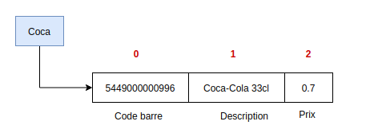

Nous avons vu que pour accéder à un élément d'un tuple, il faut utiliser son index ou indice. Dans le cas de tuples hétérogènes, ce n'est pas toujours très intuitif. Reprenons l'exemple précédent d'un tuple qui représente un article d'un magasin :
item = 5449000000996, "Coca-Cola 33cl", 0.70
Pour accéder au code-barres, il faut écrire item[0], pour accéder à la description de l'article, on utilise item[1]et enfin item[2]permet d'avoir le prix de l'article.
Lorsqu'on a un tuple hétérogène dont chaque élément représente un attribut différent, on utilise un tuple nommé.
Pour cela, il faut avant tout déclarer un nouveau type de tuple nommé, avec la librairie namedtuple, en déclarant un nom et une liste d'attributs. Voici comment déclarer un tuple nommé Item composé d'un code-barres, d'une description et d'un prix :
Une fois le nouveau type de tuple nommé créé, on peut créer des tuples nommés comme suit :
La variable coca contient un tuple nommé qui est illustré ci-dessous.

Toutes les opérations précédemment vues sur les tuples sont également applicables sur les tuples nommés. On peut, par exemple, écrire les instructions suivantes :
L'avantage apporté par les tuples nommés est qu'on peut accéder à leurs attributs directement avec leur nom avec l'opérateur d'accès(.). On fait donc suivre le nom de la variable du tuple nommé avec le nom de l'attribut, séparé par un point. On peut, par exemple, écrire :
À toi de jouer
Compéter le script suivant qui permet d'afficher si une boisson quelconque c'est du coca.